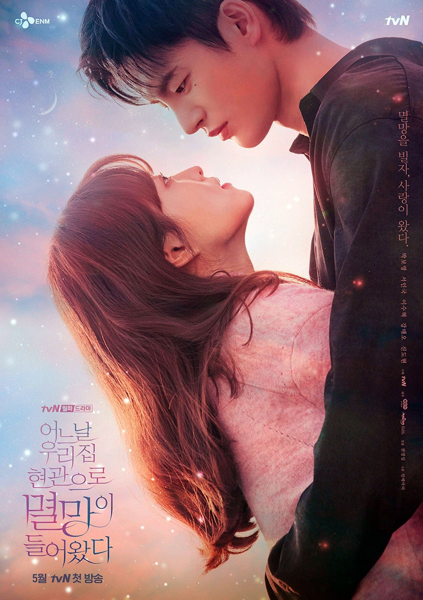

Однажды разрушение вошло в дверь моего дома

Жанр: Драма, Романтика, Фэнтези
Сериал: 16 серий
Сюжет:
Так Дон Гён осталась одна в этом мире после смерти родителей, однако постепенно она смирилась и даже начала получать удовольствие, стабильно работая в редакции веб романов. Но внезапный диагноз вгоняет девушку в пучину отчаяния, у нее рак мозга. Разозленная такой несправедливостью, девушка проклинает весь мир, желая ему разрушится. И тогда само Разрушение стучится к ней в дверь. Ким Са Рам — тот кто прерывает путь, рожденный между тьмой и светом, посредник между людьми и Богами, он
ВНИМАНИЕ!
Сайт сделан с любовью!